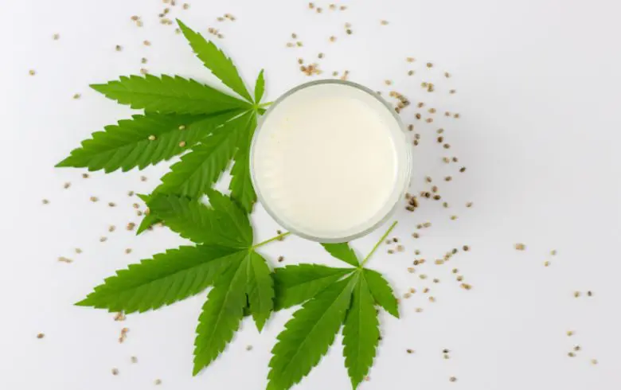
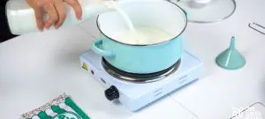
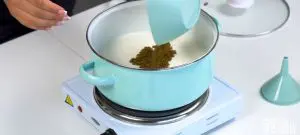
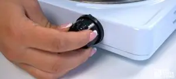
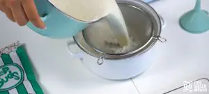

Leche Cannabica

Description
La leche cannabica es probablemente la
receta cannábica más conocida de todas y la más
elaborada, junto con la
mantequilla cannábica. No
obstante, uno de los principales problemas de esta receta es la dificultad
para acertar en la proporción de marihuana y leche, siendo en muchas veces
un efecto demasiado potente. Para resolver todas las dudas al respecto se
ha creado este artículo con toda la información necesaria.
Ingredientes
-
20-30 gr hojas secas con resina o de 2-5g de marihuana curada por cada
litro de leche
- 1L de agua embotellada
- 1L de leche entera
Paso a Paso....
-
Lo primero que se debe realizar
antes de comenzar con la elaboración de la leche de marihuana es la
limpieza de la materia vegetal
para eliminar el máximo de la clorofila que contiene. Así se consigue
que el sabor final sea menos amargo, por lo que es más fácil y
agradable. Además también se eliminan insectos, suciedad y restos de
productos aplicados de forma foliar. Los pasos a seguir son:
-
Limpiar la marihuana
Para realizar este proceso es necesario una olla, un
colador, un litro de agua embotellada y la marihuana que vayamos a
utilizar.
-
Paso 1: preparar la olla, introducir la marihuana seca
y el agua embotellada.
-
Paso 2: colocarla en el fuego y esperar
hasta que comience a hervir.
-
Paso 3: una vez ha comenzado a hervir, bajar el fuego y
mantenerlo así durante 10 minutos.
-
Paso 4: retirar la olla del fuego, colar la materia
vegetal con la ayuda de un colador y enjuagar con un poco de agua fría.
Es aconsejable no manipular demasiado la materia vegetal.
-
Elaboración de la leche de marihuana
Para elaborar la leche cannabica se emplea la marihuana
lavada, una olla, una paleta de cocina de madera y una botella de
cristal para guardar la leche.
-
Paso 1: depositar la marihuana lavada en la olla y
añadir el litro de leche entera.

-
Paso 2: poner la olla a fuego medio
hasta que comience a hervir la leche.

-
Paso 3: una vez hierva, hay que bajar el fuego para
evitar que vuelva a hervir. Remover de vez en cuando y cocinar la leche
durante unos 40 minutos.

-
Paso 4: después de ese tiempo,
retirar la olla del fuego, colar la leche e
introducirla en el recipiente de cristal.

-
Paso 5: dejarla enfriar a temperatura ambiente y
después introducirla en el refrigerador.
Nota: Lo más recomendable es
usar una pequeña cantidad y esperar a ver el efecto que
produce, en razón de ¼ de vaso de leche y
esperar 1 hora aproximadamente. Si después de ese tiempo
no se nota efecto,
se puede tomar otro ¼ de vaso de leche cannábica, así
hasta que se comience a sentir algún tipo de efecto o sensación.
Volver a inicio